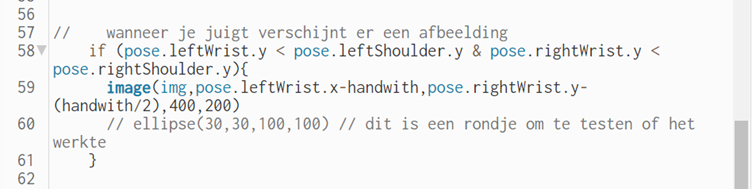

Portfolio HCI Marissa Hoekmeijer
Computer vision workshop
Voor het vak HCI Technologies gaan we deze week aan de slag met Computer Vision. We gaan vormen en interacties creëren met het programma p5.js. Dit programma maakt gebruik van javaScript, waarin je elementen kan creëren die bepaalde bewegingen of acties uit kunnen laten komen, wanneer de gebruiker een bepaalde input geeft. Dit kunnen inputs zijn zoals een beweging met de muis, maar bijvoorbeeld ook een hand beweging. Zo leren we hoe de topic Playful Interaction in een software kan werken.
Opdracht 1
Om p5.js een beetje onder de knie te krijgen, beginnen we met een introductie en moesten we een cirkel tekenen, die van kleur kan veranderen. Ik heb ervoor gezorgd dat hij random van kleur veranderd, wanneer je, je muis in klikt.
Opdracht 2
Voor deze opdracht kregen we verschillende linkjes, naar sketchjes die libaries gebruiken. Hierin heb je sketchjes die bijvoorbeeld je gezicht kunnen herkennen en volgen, ook sommige waarbij ze je hele lichaam kunnen volgen. Een paar van deze sketchjes heb ik uitgeprobeerd.
Met de volgende sketch: Klik hier, die je gezicht volgt heb ik een masker gemaakt dat elke keer van kleur verandert.
Daarnaast heb ik nog een libary uitgeprobeerd die bekijkt of je hand open of dicht is. Hierin heb ik wat code aangepast, om te zien hoe het programma hierop werkt. Wanneer ik nu mijn hand open, zie je een vierkant en circle tevoorschijn komen.
Opdracht 3
In deze opdracht werden we gevraagd om te spelen met onze handen en de afstand hierbij. Ik heb ervoor gekozen om een bolletje te visualiseren die ik groter en kleiner kan maken, daarnaast wanneer ik mijn hand omhoog doe, veranderd hij van kleur.
Opdracht 4
In deze opdracht werden we gevraagd om iets te visualiseren in het beeld, wanneer een persoon juicht. Nu is het vaak zo, wanneer iemand aan het juichen is, dat zij hun handen omhoog steken. Hierom heb ik gekeken naar de afstand tussen de shouder en de pols positie. Daar heb ik een if statement op gemaakt en wanneer de hand hoger is dan de shouder wordt er een afbeelding weergegeven.
In de volgende link zijn beiden opdracht 8 en 9 te vinden:
Klik hier